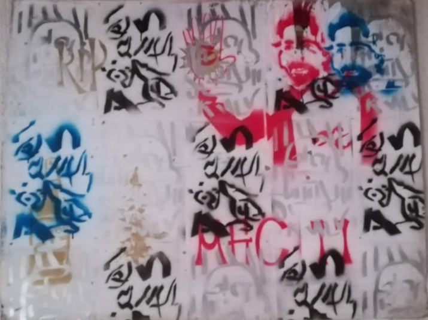
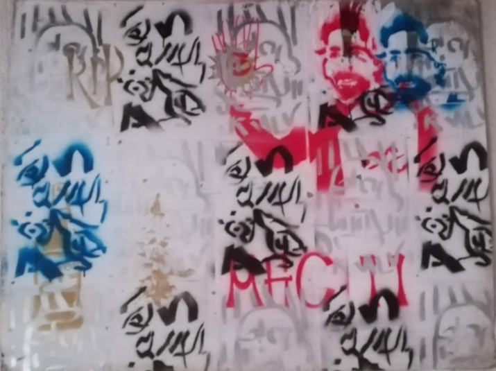

I am Frederick Viedge. I'm using this opportunity to build a site as part of an online coding course to talk about my dreams around art. I dream of an international art fun.d.
Who knows what will happen but in the meantime I make art to celebrate or commemorate friends and family.
You can see them below - and although the purpose of this exercise is a website for a social club I am accepting commissions (winky face).
But keeping with the spirit of the exercise if you're an artist in Johannesburg and are interested in meeting up, talking about your art and maybe even giving me some unwanted pieces to sell, I would be happy to do so...
My model is and will always be 10 ZAR holding fee and a 10% markup.
Art is and will always be a mechanism to generate wealth - hence I've included my ideas around using track art to make an artist a millionaire with an international track art competition.
Art is also an investment tool, so I'm tieing trading in art as part of trading markets to keep growing the profits of the fun.d. I'm also open to talking about trading in a non douchebag scammy...Let's see.
Thanks for visiting this site I've left links to videos on some of the images for you to go down a deeper rabbit hole...if you so choose to do so...
Otherwise the instagram page for 10 fun.d is where I interact with art and lovers from all over the world...
Ahh the magic of the internet.
- Frederick Viedge